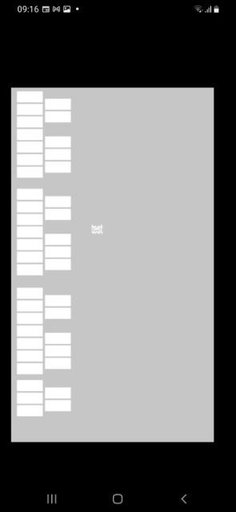

| App name | Finger Piano |
|---|---|
| Release year | |
| Developer/Publisher | jyproduct |
| First reported | |
| First reported by | @nighto |
| Version number | Display name | Bundle identifier | Minimum iOS version | Best rating | Last updated | First reported by | |
|---|---|---|---|---|---|---|---|
| 1.7 | FingerPiano | APP02.jyproduct.FingerPiano | 2.2 | ⭐️⭐️ | @nighto | ||
| 2.2 | FingerPiano | APP02.jyproduct.FingerPiano | 2.2.1 | ⭐️ | @nighto |
| Version number | touchHLE version | Operating system | GPU | Scale hack supported? | Rating | Reported | Reported by | Remarks | Screenshot |
|---|---|---|---|---|---|---|---|---|---|
| 1.7 | v0.2.2-498-g9700a4f | Android | Mali-G71 | Yes | ⭐️⭐️ | @totvrey5 | View | ||
| 2.2 | v0.2.1 | Windows 11 | NVIDIA Quadro T2000 | Couldn't test | ⭐️ | @nighto | Crashed with: thread 'main' panicked at 'Object 0x380010c0 (class "_touchHLE_NSDictionary", 0x380010e0) does not respond to selector "boolForKey:"!', src\objc\messages.rs:60:13 | ||
| 1.7 | v0.2.1 | Windows 11 | NVIDIA Quadro T2000 | Couldn't test | ⭐️ | @nighto | Gets stuck on a black screen indefinitely; when you try to quit touchHLE it then crashes with: thread 'main' panicked at 'Object 0x380011c0 (class "_touchHLE_NSDictionary", 0x380011b0) does not respond to selector "setInteger:forKey:"!', src\objc\messages |
| Rating | Description |
|---|---|
| ⭐️ | Completely broken: app crashes immediately without any user interaction. |
| ⭐️⭐️ | Only (part of) the main menu, intro or similar is working. |
| ⭐️⭐️⭐️ | Some of the main content of the app works, but with major issues. |
| ⭐️⭐️⭐️⭐️ | The main content of the app works (e.g. entire game is playable) with only small issues. |
| ⭐️⭐️⭐️⭐️⭐️ | Everything works. The app is fully usable. |
